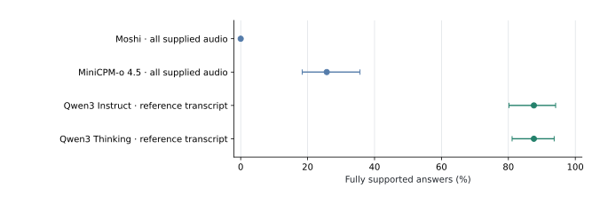
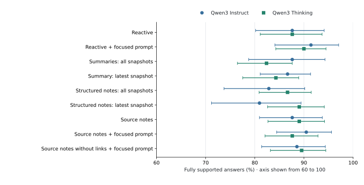
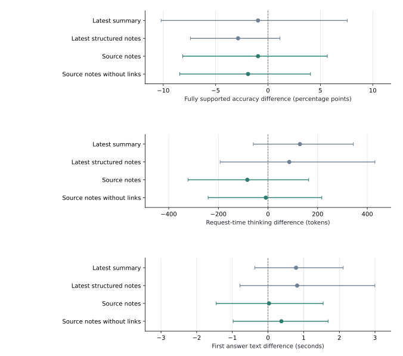
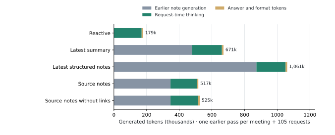

Full-bank evaluation · 2026-11-11T09:29:23-05:00
Saved automatic scores · experiments paused
S1 and S2 on all 105 questions
Main findings from saved automatic scores
Scores are preliminary automatic judgments; final source review is pending.
- Reactive thinkers with reference transcripts score 87.6% fully supported answers, compared with 25.7% for MiniCPM with all audio and 0.0% for Moshi. Details
- The focused Instruct prompt scores 91.4%; adding source notes scores 90.5%, with final source review still pending. Details
- The controlled timing run does not establish lower post-request latency from saved notes. Details
- Earlier note generation adds substantial token cost even when request-time thinking is slightly lower. Details
Project checklist · Daily log · Completed note-optimization pilot
1. Evaluation set and coverage
All 105 existing questions are retained across 26 meetings and earnings calls. The bank includes the 18 questions used to refine source notes; 44 questions come from 15 other meetings and will also be analyzed separately. Each S1 model receives the same source recording and unchanged, voice-matched synthesized question, starting with “Assistant,”. The source prefixes total 30.71 hours per model in the full-input condition.
| Work | Current status | Accuracy status |
|---|---|---|
| Reference and evaluator checks | 105 reference prefixes audited; all 50 evaluator development controls passed. | Real-answer source review and three invalid judge verdicts remain pending. |
| Native audio models | 784/945 inputs complete: Moshi 315, MiniCPM 315 and DuplexOmni 154. | Saved scores cover Moshi and MiniCPM; DuplexOmni is unscored. |
| Reference-transcript notes and thinkers | Note generation completed for 26 meetings; 2,835 main thinker answers saved across nine conditions. | Existing automatic scores are shown below; final source review is pending. |
| Controlled S2 timing | 525 outputs saved: 105 questions in each of five conditions; 520 first-answer timestamps recorded. | Saved paired confidence intervals are displayed; missing timestamps remain missing. |
| Parakeet-transcript S2 | 2,520 answers saved across both thinkers, four methods and two speaker-identity settings. | Answer scoring is pending; these outputs have no accuracy score on this page. |
| Whisper-transcript S2 | Whisper branch is incomplete. | No full-bank answer scores are available. |
| Pause and publication scope | Inference and automatic controllers remain paused since November 7. | This update uses only saved scores and outputs; no new inference or scoring. |
2. Preliminary scores on 105 questions
Required-fact accuracy is the percentage of answers containing all minimum facts needed to answer the question. Fully supported accuracy also requires the absence of material unsupported claims. An empty reply or an acknowledgement without the required facts fails both scores.
All conditions use the same 105 distinct questions across 26 meetings. Qwen3 Thinking has two seeds in the main accuracy run; their scores are averaged within each question. Instruct has one greedy run. Three unique judge verdicts need review: two affect primary scores and one affects the alternative S1 response window. Unresolved scores are omitted from the percentages and shown in the scored-answer counts.
Download summary tables (CSV) · Saved means, confidence intervals and paired comparisons (JSON) · All scored final answers and fact checks (JSON)
Audio models and thinkers with reference transcripts
With all supplied history, MiniCPM produces fully supported answers on 25.7% of questions and Moshi on 0.0%; reactive thinkers with reference transcripts score 87.6% (Figure 1). Audio systems receive recordings through their native loops. The text thinkers receive annotated transcripts and speaker labels; model size, modality and retained context differ across these systems.


| Model | Supplied audio history | Required facts | Fully supported | Answers scored |
|---|---|---|---|---|
| Moshi | Question only | 8.6% | 4.8% | 105/105 |
| Moshi | Latest four minutes | 5.7% | 1.9% | 105/105 |
| Moshi | All supplied audio | 0.0% | 0.0% | 105/105 |
| MiniCPM-o 4.5 | Question only | 25.0% | 14.4% | 104/105 |
| MiniCPM-o 4.5 | Latest four minutes | 47.6% | 29.5% | 105/105 |
| MiniCPM-o 4.5 | All supplied audio | 33.3% | 25.7% | 105/105 |
The primary native-text window is the first 19.2 seconds after the supplied input ends. All histories use the same full-prefix reference. MiniCPM’s question-only row has one unresolved score, so its percentages use 104 scored questions. DuplexOmni has 154/315 completed input cases and has not yet been scored; it is excluded from these accuracy plots.
Text S2 with reference transcripts: saved notes and thinker prompts
Instruct scores 91.4% fully supported answers with the focused reactive prompt and 90.5% with source notes plus that prompt. Thinking scores 90.0% and 87.6%, respectively. These point estimates do not establish an accuracy gain from adding source notes. Figure 2 shows the full condition comparison; Tables 3 and 4 give the exact percentages.


| Condition | Required facts | Fully supported | Answers scored |
|---|---|---|---|
| Reactive | 92.4% | 87.6% | 105/105 |
| Reactive + focused prompt | 91.4% | 91.4% | 105/105 |
| Summaries: all snapshots | 93.3% | 87.6% | 105/105 |
| Summary: latest snapshot | 92.4% | 86.7% | 105/105 |
| Structured notes: all snapshots | 90.5% | 82.9% | 105/105 |
| Structured notes: latest snapshot | 92.4% | 81.0% | 105/105 |
| Source notes | 89.5% | 87.6% | 105/105 |
| Source notes + focused prompt | 91.4% | 90.5% | 105/105 |
| Source notes without links + focused prompt | 91.4% | 88.6% | 105/105 |
| Condition | Required facts | Fully supported | Request thinking tokens | Answers scored |
|---|---|---|---|---|
| Reactive | 93.8% | 87.6% | 1,666 | 210/210 |
| Reactive + focused prompt | 91.9% | 90.0% | 1,539 | 210/210 |
| Summaries: all snapshots | 90.0% | 82.4% | 2,044 | 210/210 |
| Summary: latest snapshot | 93.3% | 84.3% | 1,630 | 210/210 |
| Structured notes: all snapshots | 92.4% | 86.7% | 1,611 | 210/210 |
| Structured notes: latest snapshot | 92.9% | 89.0% | 1,644 | 210/210 |
| Source notes | 93.8% | 89.0% | 1,556 | 210/210 |
| Source notes + focused prompt | 91.9% | 87.6% | 1,623 | 210/210 |
| Source notes without links + focused prompt | 92.4% | 89.5% | 1,540 | 209/210 |
Thinking token counts are mean native reasoning tokens generated after the question. Earlier note-generation tokens are counted separately below. Instruct does not expose a separate thinking channel. The source-notes-without-links row has 209/210 valid Thinking scores; all 105 questions contribute, with one question having only one valid seed.
Controlled timing: no established response-latency gain
The isolated timing run contains 105 questions in each of five conditions, using Thinking seed 23, serial requests and a cleared prefix cache. Every condition uses the focused thinker prompt. Source notes average 1,533 request-time thinking tokens versus 1,616 for reactive thinking, while first answer text arrives at about 10 seconds in both conditions. The saved paired confidence intervals include zero for accuracy, thinking tokens and latency.
| Condition | Fully supported | Request thinking tokens | First answer (s) | Complete output (s) | First-answer times recorded |
|---|---|---|---|---|---|
| Reactive + focused prompt | 86.7% | 1,616 | 9.94 | 10.42 | 105/105 |
| Latest summary + focused prompt | 85.7% | 1,745 | 10.71 | 11.19 | 104/105 |
| Latest structured notes + focused prompt | 83.8% | 1,702 | 10.64 | 11.09 | 103/105 |
| Source notes + focused prompt | 85.7% | 1,533 | 9.99 | 10.43 | 103/105 |
| Source notes without links + focused prompt | 84.8% | 1,608 | 10.31 | 10.83 | 105/105 |
On the 103 questions with first-answer measurements in both the reactive and source-note conditions, source notes change latency by +0.03 seconds (95% interval: −1.45 to +1.55 seconds). Among 81 questions where both answers are automatically scored as fully supported and both times are available, the difference is +0.22 seconds (−1.51 to +2.32 seconds).


A missing first-answer timestamp remains missing and is counted in the final column of Table 5; it is not replaced by zero. Main accuracy-run request times include concurrent requests and are kept separate from this isolated latency comparison.
Earlier thinking and total generated tokens
Reducing request-time thinking does not remove the earlier note-generation work. Figure 4 and Table 6 count one earlier writer pass over the 26 meetings, including unused updates and revision checks, plus the 105 controlled-timing requests for each condition.


| Condition | Earlier generation | Request thinking | Answer + format tokens | Total generated |
|---|---|---|---|---|
| Reactive + focused prompt | 0 | 169,728 | 9,487 | 179,215 |
| Latest summary + focused prompt | 477,979 | 183,252 | 9,818 | 671,049 |
| Latest structured notes + focused prompt | 872,613 | 178,735 | 9,657 | 1,061,005 |
| Source notes + focused prompt | 346,754 | 160,985 | 9,158 | 516,897 |
| Source notes without links + focused prompt | 346,754 | 168,798 | 9,923 | 525,475 |
Generated format tokens mark boundaries in model output and are included with the answer tokens. These are generated-token counts. Logical input-token counts and input limits appear in the methods appendix; token counts alone do not measure total GPU work or live readiness. Source notes with and without links reuse the same writer outputs.
Inspect an answer and its score
Choose a question and condition to inspect the exact saved final answer, minimum reference facts, source speech and automatic fact checks. Thinking conditions show both seeds unless a seed is selected. Each card shows the final answer and its score.
Answers load when requested.
Methods, earlier checks and compute
3. Duplex-only models
DuplexOmni, Moshi and MiniCPM-o 4.5 process their native audio packets in order. Model outputs enter the native conversation state before the next packet. The three conditions supply only the question, the preceding four minutes plus the question, or all preceding audio plus the question. Question timing within the native packets is held fixed. The main output is the model’s native text during the 19.2 seconds following the supplied input.
All input audio is processed in the full-input condition. Retained history follows each model’s capacity: Moshi uses its native 3,000-step attention window (about 240 seconds); MiniCPM-o 4.5 uses its native decoder with sliding-window removal off; DuplexOmni retains all turns until its context or audio-count limit and then removes the oldest complete turns to half capacity. Every removal is logged. Malformed native packet replies are retained verbatim in conversation history, with incomplete fields recorded separately, so one unfinished packet does not end the meeting. Empty answers, incomplete inputs, context-limit events and software failures receive separate counts.
| Condition | Audio input | Questions per model |
|---|---|---|
| Request only | Inserted spoken question, with native packet alignment. | 105 |
| Recent history | Latest 240 seconds of original discussion plus question. | 105 |
| Full input | All original audio through the insertion time plus question. | 105 |
DuplexOmni uses constrained listening during the original discussion and inserted question: the ASR and other native fields are decoded for every packet, outward speech is suppressed in the saved listening state, and answering is enabled at the known end of the supplied question audio. This gives DuplexOmni the question-end time; it does not test autonomous response timing. Moshi and MiniCPM retain their native streaming output and cache behavior.
Before scaling DuplexOmni, the JSON and binary endpoints produced identical native fields and saved history for all 104 packet records in two short controls. Waveform synthesis can therefore be omitted for this text evaluation. Stopping decoding immediately after ASR changed later responses and was excluded. The selected waveform-decoding and resampling cache also preserved all 104 native field records, with fresh model decoding on every packet.
4. Text S2 conditions
The S2 thinkers are Qwen3-30B-A3B-Instruct-2507 and Qwen3-30B-A3B-Thinking-2507. A common Instruct writer generates the saved summaries and notes for both thinkers before seeing any future question. The thinker receives the complete available transcript, the applicable saved notes and the question. Thinking uses seeds 23 and 47; Instruct uses greedy decoding.
| Condition | Saved material at question time | Purpose |
|---|---|---|
| Reactive | None. | Baseline without earlier reasoning. |
| Reactive + focused prompt | None. | Measure the effect of the shorter, evidence-focused thinker instruction. |
| Summaries · all snapshots | Every valid earlier summary that fits. | Reproduce accumulated-summary prompting. |
| Summary · latest snapshot | Only the latest valid summary. | Remove duplicated older summaries without changing writer work. |
| Structured notes · all snapshots | Every valid earlier structured snapshot that fits. | Reproduce the original structured-note method. |
| Structured notes · latest snapshot | Only the latest valid structured snapshot. | Test whether older snapshots help. |
| Source notes | One bounded state of selected original speech and relationships. | Test incremental, deduplicated source selection. |
| Source notes + focused prompt | The same source state. | Test focused reading with saved evidence. |
| Source notes without links + focused prompt | Identical selected source speech; relationship links removed. | Isolate the contribution of links between statements. |
Source-note updates use new transcript segments, ten seconds of earlier reference speech and one current state, with at most 64 selected segments, 20 visible links and 4,096 compact-JSON tokens. The existing 25–40 second update schedule is within the requested 10–40 second range. Summaries and old structured notes use the original full-prefix and earlier-snapshot prompts. Earlier generation costs are shared when conditions reuse the same notes.
Both thinkers have a common 49,152-token input limit within a 65,536-token context. If accumulated snapshots exceed that input limit, the oldest snapshots are omitted and their IDs are recorded; the transcript is retained. No reference answer enters the writer or thinker input.
Completed earlier note generation
All 26 meetings have completed their question-blind note runs. Source notes use 346,754 earlier output tokens, compared with 872,613 for the original structured notes, a 60.3% reduction (Figure 5). The source total includes 239 revision-check calls. These are earlier note-generation costs; saved accuracy and controlled timing appear in Tables 3–5, with final source review pending.
| Method | Calls | Logical input tokens | Earlier output tokens |
|---|---|---|---|
| Summaries | 1,277 | 28,780,395 | 477,979 |
| Original structured notes | 1,277 | 37,734,728 | 872,613 |
| Source notes | 1,516 | 7,310,223 | 346,754 |
All 1,277 source-note states pass checks for exact copied speech, speaker labels, times and the declared memory budget. Six summary snapshots and 18 original structured-note snapshots cite transcript IDs that were unavailable at their update time; those snapshots are excluded from thinker inputs and their generation costs remain counted. These checks cover source copying and availability; relationship meanings are evaluated separately.
Duplication check over all 105 question inputs
Before applying the thinker input limit, accumulated old snapshots contain a mean 362.1 note entries per question, of which 348.6 repeat an earlier normalized fact text. The current source state contains a mean 48.3 selected speech segments and no exact repeated text. This counts exact repetitions after case and punctuation normalization; accuracy and preservation of important revisions require the thinker evaluation. All 105 duplication checks and state-audit counts
5. Post-request latency and token cost
The primary timing comparison uses isolated, serial Thinking requests for all 105 ground-truth-transcript questions, with seed 23. It measures time to the first answer text and time to the completed output. The prefix cache is cleared before each request and condition order is shuffled. Batched accuracy-run times are retained as throughput measurements.
These timings cover the thinker with notes already available; they do not include ASR or establish that background work finishes before a live request. Native thinking tokens count reasoning generated after the request; amortized-thinking tokens count earlier note generation and revision checks. Answer output and all earlier input/output costs are reported separately. Instruct does not expose a separate thinking channel. A reduction in token count will be called a latency improvement only when the measured time also falls and answer quality is retained.
Figures 3 and 4 show the saved paired differences and total generated-token accounting. The confidence intervals resample meetings after averaging seeds within each question.
Timing qualification: two evaluation questions
Four actual answers qualify the streaming measurements. Source checking confirms the necessary facts in these answers. Source notes reduce response time for one question and increase it for the other; the complete 105-question timing comparison is shown above.
| Question | Reactive thinking tokens | Reactive latency (s) | Source-note thinking tokens | Source-note latency (s) |
|---|---|---|---|---|
| Assistant, if a word is ambiguous but fits multiple contexts, should we pick one or leave it uncertain? | 2469 | 14.07 | 1733 | 10.43 |
| Assistant, what did we decide about capital letters when a sentence continues into the next segment? | 1957 | 11.37 | 2019 | 12.21 |
Assistant, if a word is ambiguous but fits multiple contexts, should we pick one or leave it uncertain? · Source notes
Original speech:
- B: Choose one, it c I mean y think of it from a speech recognition point of view again.
Assistant, what did we decide about capital letters when a sentence continues into the next segment? · Reactive
Original speech:
- B: Um but no, it it can continue into the next segment and that's perfectly fine.
- C: So if it's quite clear that the sentence is being carried on, the p you know, the sentence from the previous segment is being carried on, then that's when you don't capitalise.
Assistant, what did we decide about capital letters when a sentence continues into the next segment? · Source notes
Original speech:
- C: So if it's quite clear that the sentence is being carried on, the p you know, the sentence from the previous segment is being carried on, then that's when you don't capitalise.
- C: Otherwise you do.
Assistant, if a word is ambiguous but fits multiple contexts, should we pick one or leave it uncertain? · Reactive
Original speech:
- A: But if there's a chance that it's equally likely that they could have said something or they could have said something like ice cream and I scream, then just choose one and leave it, right.
- B: Choose one, it c I mean y think of it from a speech recognition point of view again.
6. Generated transcripts and speaker identities
The full extension includes Parakeet and Whisper, causal audio prefixes and stable speaker labels. Automatic requester matching is compared with a separately labeled diagnostic that uses past annotations to map speaker identities. Notes retain stable anonymous labels; the diagnostic supplies a consistent identity legend at question time.
Question text is held fixed across S2 conditions; ASR replaces the prior meeting speech. The four primary ASR comparisons use the same original thinker prompt: reactive, all summaries, all structured-note snapshots and source notes. Word times assign recognized words to speakers and prevent future speech from entering earlier updates.
The variable-speaker pipeline completed six earnings-call prefix tests without receiving the reference speaker count. It estimated six speakers in the first call and five in the second; the reference annotations contain six and nine labels respectively. The Parakeet extension completed its inputs and all 2,520 matched thinker outputs; its answer scoring remains pending. Whisper remains incomplete. No additional inference or scoring runs during the current pause.
7. Reference and scoring checks
A new Thinking-model audit read the complete available transcript for all 105 questions. Codex checked the nine flagged chronology, identity and scope claims against the original speech and froze the references for scorer qualification. Source checks for all nine flags.
The main score checks the minimum facts needed to answer the question and reports material unsupported claims separately. A supported-correct answer supplies the necessary facts and has no material unsupported claim; optional qualifications are recorded separately. All history conditions use the same full-prefix reference, so request-only accuracy measures how often a model gives the target answer without the earlier discussion. Response-type counts separately track refusals, acknowledgements and empty replies.
The current evaluator agrees with all 50 reviewed development controls on required facts and unsupported claims, including the individual ownership checks. Codex reviewed the final control outputs. Saved automatic scores are displayed above, with three unique invalid verdicts and final source inspection still pending. The plotted intervals reflect variation across meetings; evaluator disagreements are tracked separately.
Evaluation prompts, code rules and actual checks
Qwen3-30B-A3B-Instruct first compares the answer with the verified minimum facts. It consults the full causal transcript for additional claims or alternative explanations that the short reference cannot resolve. Code handles empty replies, replies containing only a refusal or promise to check, evaluation-only speaker-label mapping and claims of completed external lookups. A targeted check distinguishes such lookups from a supported meeting report. Reading supplied notes is allowed.
For example, “D.” answers who volunteered to take notes; “B.” names the wrong person; “Let me check the folder status for you” leaves the question unanswered. Seven minutes is sufficient for the presentation-time question, while seven minutes plus a claimed live-calendar lookup includes an unsupported action. The 50 controls were used during scorer development; they measure agreement with Codex source reviews. On explicit resume, real answer gains, losses and a reproducible sample from other questions will receive further source review. Exact evaluator prompts, code-rule descriptions and all 50 expected and predicted labels
8. Compute and next steps
This webpage update uses 0 GPUs. Inference, new scoring and automatic controllers remain paused. The saved scoring run used one A100 SXM4 80 GB for Qwen3-30B Instruct and an 8 GiB KV cache on GPU 0, with no other model sharing that GPU.
Each GPU job uses one 80 GB GPU, with all of its model components on GPU 0. MiniCPM, the original Moshi run and the note writer use H100 SXM GPUs; the Moshi continuation, scorer calibration and accuracy-only thinkers can use A100 SXM4 GPUs. The isolated latency study uses one H100 SXM throughout. DuplexOmni qualification used one A100 with the complete S1 stack; full native-text workers use separate A100 or H100 GPUs for the S1 Thinker component, with each evaluation case assigned to one worker. Dependent jobs reuse a lane, with at most four GPUs active. ASR runs after native inference frees its lane, and response-audio synthesis follows the completed native-text workers. vLLM supplies BF16 inference, CUDA graphs and prefix caching for text models.
- On explicit resume, review the unresolved judge outputs and real-answer comparisons to validate the preliminary scores.
- On explicit resume, score the completed Parakeet answers to compare reference and generated transcripts.
- On explicit resume, finish DuplexOmni and Whisper, then complete the full S1/S2 comparison.